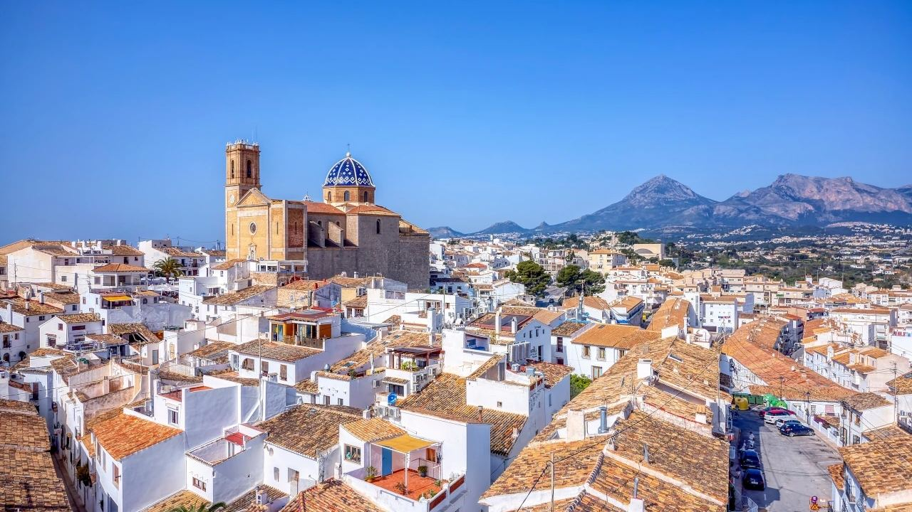
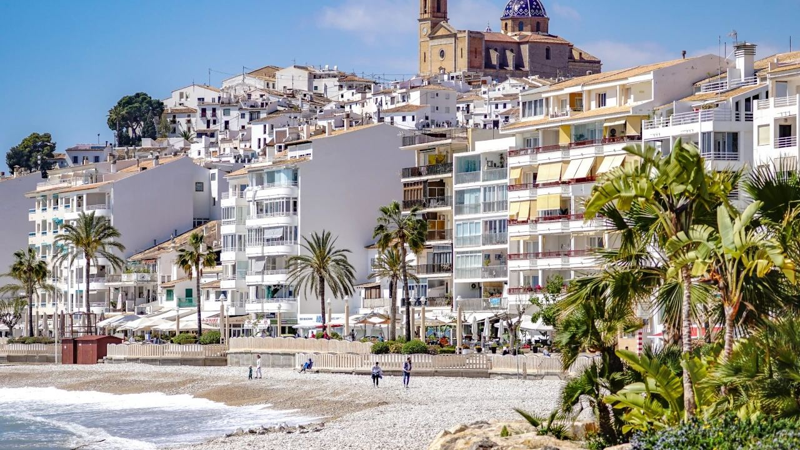
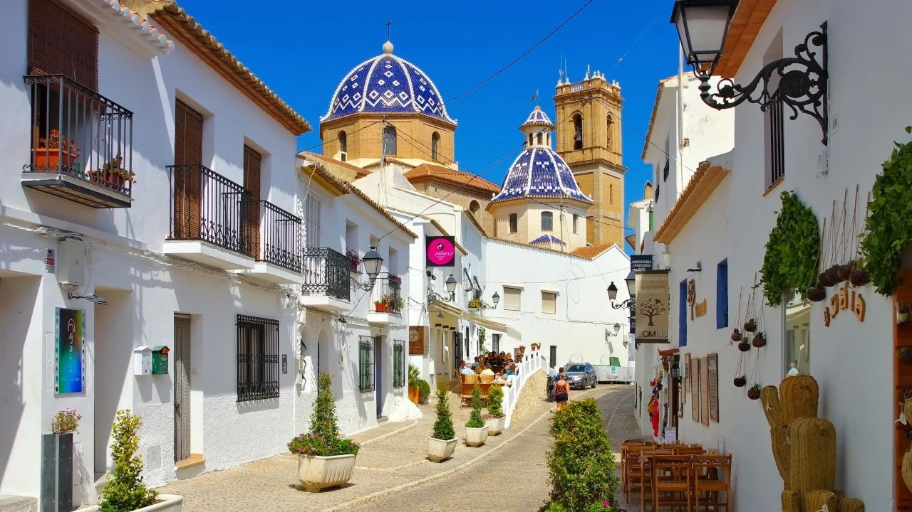
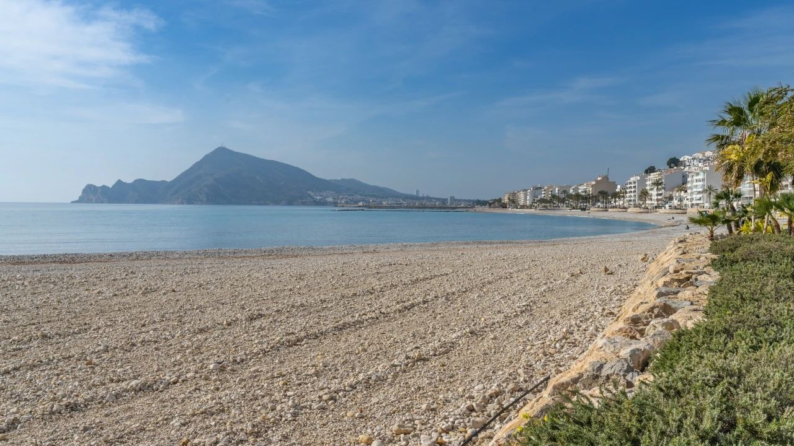
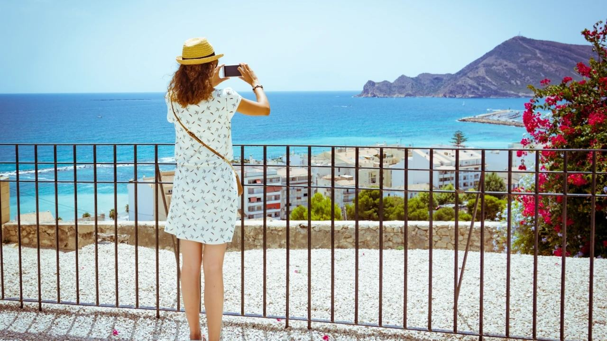

Costa Blanca · Zonas
Altea, España – ¿Qué hay para ver en la Costa Blanca?
 Por Lucyna Gacek · · actualizado · 4 min de lectura
Por Lucyna Gacek · · actualizado · 4 min de lectura

En resumen: Altea es un municipio de unos 22.000 habitantes en el norte de la Costa Blanca, a 11 km de Benidorm y a una hora del aeropuerto de Alicante. Es conocido por su casco antiguo blanco en lo alto de una colina, la iglesia de Nuestra Señora del Consuelo con sus cúpulas azules, sus playas de cantos rodados y calas tranquilas, y su ambiente artístico y relajado. Altea Hills y el Mascarat están entre las zonas de villas más buscadas de la costa.
Altea es uno de los pueblos más bonitos de la Costa Blanca. Es tranquilo y a la vez está cerca de todo, por eso muchos visitantes vuelven para comprar una casa. Esto es lo que hay que ver y hacer, y así es la vida en Altea.
¿Dónde está Altea?

Altea está en la provincia de Alicante, en la bahía donde el río Algar desemboca en el Mediterráneo, entre la Serra Gelada y la Sierra de Bernia. Se encuentra a:
- unos 11 km de Benidorm,
- unos 20 km de Calpe,
- unos 60 km de Alicante y su aeropuerto (alrededor de una hora en coche).
El TRAM de la costa (línea 9) y los autobuses comunican Altea con Benidorm, Calpe y Dénia.
El casco antiguo

A Altea se la llama la villa blanca de la Costa Blanca, y su casco antiguo lo demuestra. Se alza sobre una colina junto al mar, con calles estrechas empedradas, casas encaladas, balcones llenos de flores y pequeñas plazas.
En lo más alto está la iglesia de Nuestra Señora del Consuelo, símbolo del pueblo. Sus cúpulas de azulejos azules y blancos, terminadas a principios del siglo XX, se ven desde muy lejos a lo largo de la costa. La plaza de la Iglesia, frente a ella, está llena de cafeterías.
Los miradores del casco antiguo, como el Mirador de los Cronistas, ofrecen algunas de las mejores vistas de la costa.
Playas y calas

La mayoría de las playas de Altea son de cantos rodados, lo que mantiene el agua muy limpia. Las más conocidas son:
- Playa de la Roda, la principal, bajo el casco antiguo, con paseo, cafeterías y deportes náuticos.
- Playa de la Olla, más tranquila, frente al islote de l'Olla.
- Cap Negret, una playa tranquila entre rocas, ideal para hacer snorkel.
- Cala del Soio y las calas del Mascarat, pequeñas y rocosas, muy apreciadas por los buceadores.
El paseo marítimo recorre la bahía desde el casco antiguo y es perfecto para pasear al atardecer.
Qué hacer

- Deportes náuticos. Vela, pádel surf, kayak y buceo desde el Club Náutico y las playas.
- Arte. Altea atrae a artistas desde hace décadas. Aquí está la Facultad de Bellas Artes de la Universidad Miguel Hernández, y el casco antiguo está lleno de galerías y talleres.
- Fiestas. En agosto, el Castell de l'Olla llena la bahía de fuegos artificiales sobre el islote. A finales de septiembre, los Moros y Cristianos llenan las calles de desfiles y música.
- Naturaleza. Haga senderismo en el Parque Natural de la Serra Gelada, que protege acantilados y mar entre Altea y Benidorm, o visite las cascadas y pozas de las Fonts de l'Algar, a unos 20 minutos hacia el interior.
- Excursiones. Guadalest, Calpe, Jávea y los viñedos del valle de Jalón están muy cerca.
Gastronomía en Altea
La cocina de Altea se basa en el pescado fresco, el marisco y el arroz. Además de la paella, pruebe:
- el arròs a banda, arroz cocinado en un fumet de pescado,
- el suquet de peix, guiso de pescado y patata,
- el arròs al forn, arroz al horno con cerdo, garbanzos y embutido,
- la coca, la torta salada típica de la zona.
En el casco antiguo hay muchos restaurantes pequeños y terrazas con vistas a la bahía, y el paseo marítimo está lleno de marisquerías.
Vivir en Altea
Muchos de los que visitan Altea vuelven para quedarse. El pueblo tiene una comunidad internacional, buena atención sanitaria cerca y colegios internacionales a poca distancia en coche. Las zonas más buscadas son:
- Altea Hills, urbanización cerrada con grandes villas y vistas al mar,
- el Mascarat, con el puerto deportivo Greenwich y pisos modernos,
- la Sierra de Altea y los alrededores de Altea la Vella, para villas tranquilas con jardín,
- la zona del casco antiguo y el paseo marítimo, para pisos con todo a mano.
Preguntas frecuentes
¿Merece la pena visitar Altea?
Sí. Su casco antiguo blanco, la iglesia de cúpulas azules, las playas de agua cristalina y su ambiente artístico y relajado la convierten en uno de los pueblos más bonitos de la Costa Blanca.
¿A qué distancia está Altea del aeropuerto de Alicante?
A unos 60 km, alrededor de una hora en coche.
¿Tiene Altea playas de arena?
La mayoría de las playas de Altea son de cantos rodados, por eso el agua es tan clara. Para arena, el Albir y Benidorm están a pocos minutos en coche.
¿Cuáles son las mejores zonas para comprar en Altea?
Altea Hills y el Mascarat para villas de lujo con vistas al mar, la Sierra de Altea para casas tranquilas con jardín, y la zona del casco antiguo y el paseo para pisos.
Encuentre su casa en Altea
Altea es para quien busca calma, belleza y buena mesa, con Benidorm, Alicante y el aeropuerto cerca. Conocemos bien el pueblo y sus alrededores. Cuéntenos qué busca y le enseñaremos villas y pisos en Altea y alrededores.